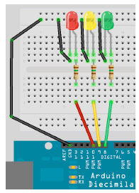

Инфо за дисциплината ИТК¶
What you will need¶
For this project we are going to leave the exact same circuit set up as in Project 1, but will use some different code to make the LED display a message in Morse Code. In this case, we are going to get the LED to signal the letters S.O.S., which is the international morse code distress signal. Morse Code is a type of character encoding that transmits letters and numbers using patterns of On and Off. It is therefore nicely suited to our digital system as we can turn an LED on and off in the necessary pattern to spell out a word or a series of characters. In this case we will be signaling S.O.S. which in the Morse Code alphabet is three dits (short flash), followed by three dahs (long flash), followed by three dits again. We can therefore now code our sketch to flash the LED on and off in this pattern, signaling SOS.
Enter the code¶
Create a new sketch and then type in the code listed above. Verify your code is error free and then upload it to your Arduino.
Така изглежда нашата платка:
Така изглежда нашия код:
// Project 3 - Traffic Lights
int ledDelay = 10000; // delay in between changes
int redPin = 10;
int yellowPin = 9;
int greenPin = 8;
void setup() {
pinMode(redPin, OUTPUT);
pinMode(yellowPin, OUTPUT);
pinMode(greenPin, OUTPUT);
}
void loop() {
| Header 1 | Header 2 | Header 3 |
|---|---|---|
| Stub Row 1 | Column 2, row 2 | Column 3, row 2 |
| Stub Row 2 | Column 2, row 3 | Column 3, row 3 |
| Stub Row 3 | Column 2, row 4 | Column 3, row 4 |
Пример за списък:
Дефиниция 1
Дефиниция 1 се отнася за горния текст.
ред 2
- под ред 1
- под ред 2
Important
Важно
Error
Грешка
Hint
Подсказка
Warning
Предупреждение
команди
команди
Ако искате да се върнете на предната страница.
Ако искате да видите какво ви е нужно обърнете на следния линк.
Ако искате да посетите сайта на университета отидете на: https://www.tugab.bg/index.php?lang=bg.
Ако искате да посетите сайта на университета отидете tuk.